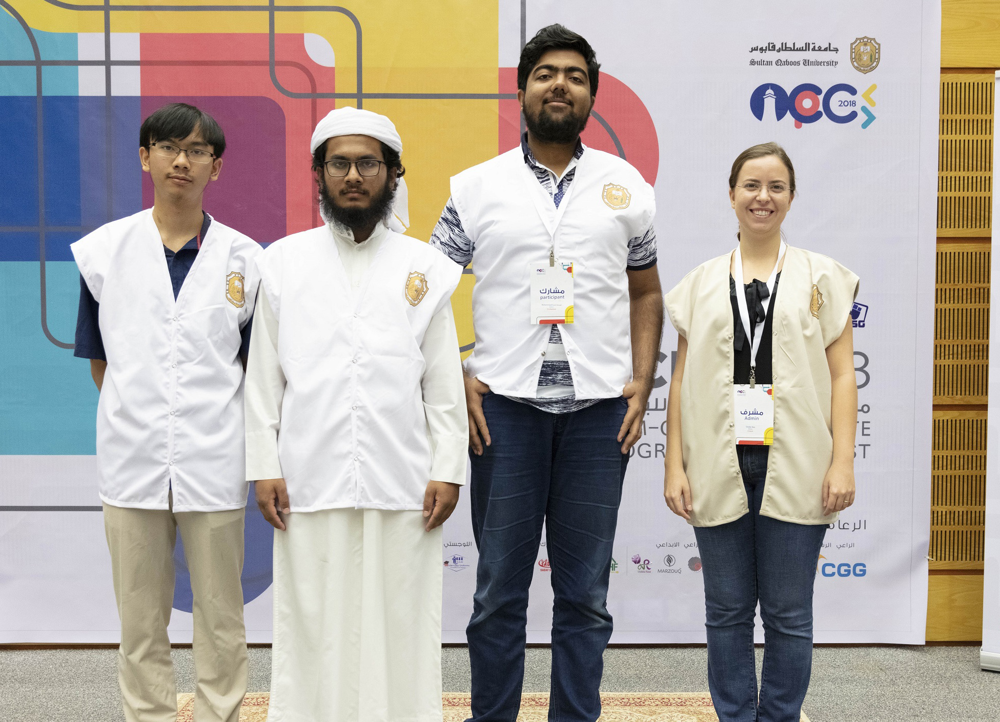

CMU-Q Marketing and Public RelationsMonday, October 22, 2018Print this page.

A team of three Carnegie Mellon University in Qatar (CMU-Q) students won the Oman Collegiate Programming Competition on Oct. 17 at Sultan Qaboos University in Muscat. Mohammed Yusuf Ansari, Mohammed Nurul Hoque and Akhyar Kamili were the only team to solve nine of 12 problems.
A second CMU-Q team, comprising Sameer Ahmad, Ishaq Yusuf Haj Hasan and Hari Krishna, placed fifth in the competition. A total of 52 teams from 22 institutions participated. Both CMU-Q teams have now qualified to compete at the Arab Collegiate Programming Competition regional competition.
Michael Trick, dean of CMU-Q, congratulated the students for the win. "We are very proud of how these six students represented CMU-Q, and the state of Qatar, at this competition in Oman. Our students work very hard and produce high-quality work, and it is gratifying to share their talent with the international community."
"I would also like to congratulate the entire team of CMU-Q computer science professors, and in particular Giselle Reis, who advised the students, for their dedication to computer science education," he continued. "This win reflects the quality of their teaching and their commitment to student learning."
All six students are part of CMU-Q's Computer Science Program, which follows the School of Computer Science's curriculum.
Byron Spice | 412-268-9068 | bspice@cs.cmu.edu